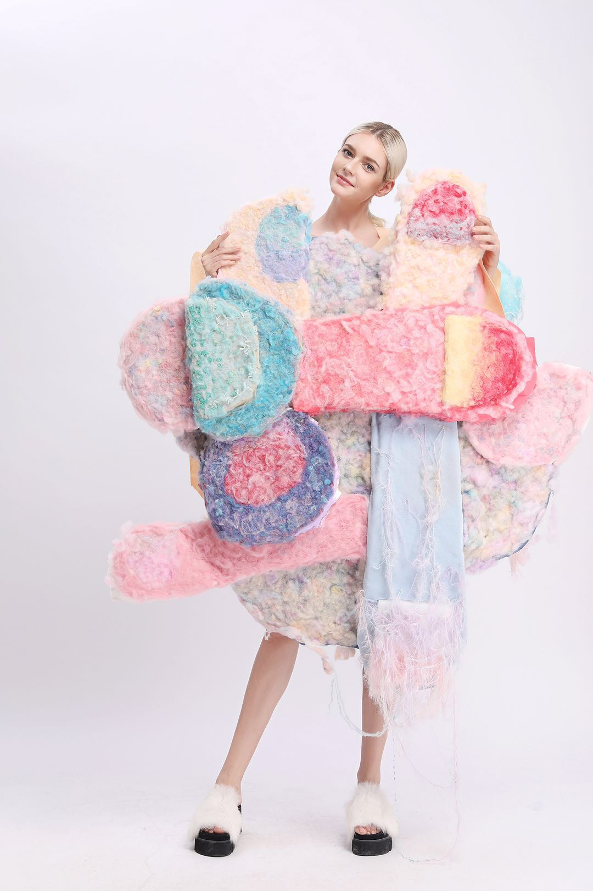
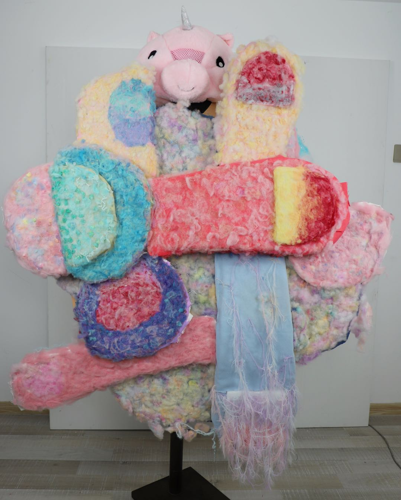
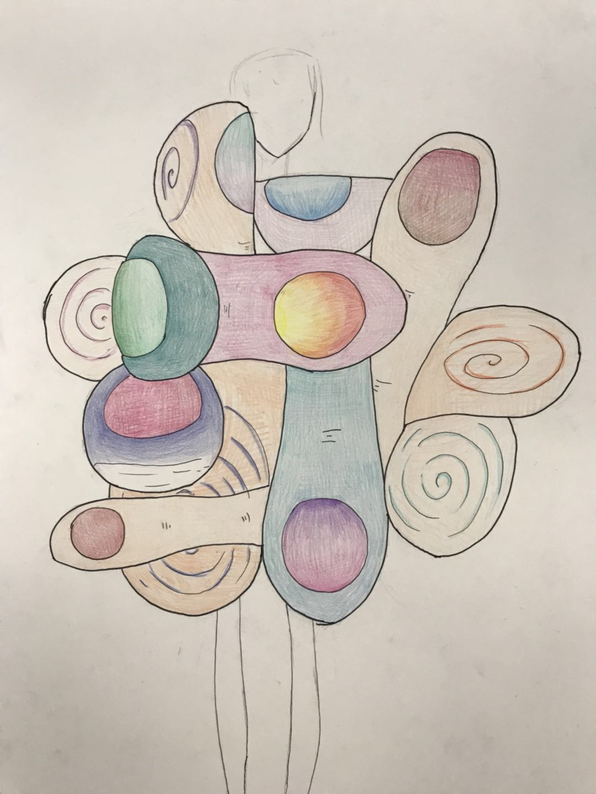

Wearable Sculpture / Selected Work
Fingers
A wearable soft sculpture exploring flexibility, distortion, and the tension between bright surfaces and bodily limitation.

About the Project
Fingers is a wearable soft sculpture inspired by the form and movement of fingers. By studying fingers from different angles, I transformed their flexible shapes into oversized, padded forms and recombined them into a body-based garment.
The project explores the tension between flexibility and heaviness. Fingers usually suggest movement, touch, and control, but when their forms are enlarged, distorted, and rearranged, they become awkward and less mobile.
Through bright colors and soft textures, the piece questions how cheerful surfaces can sometimes hide discomfort, limitation, or loss of function.
Materials: Fabric, padding, thread, mixed textile materials
Sketch & Details
Early sketches studied the structure and silhouette of fingers, then translated those forms into soft, exaggerated volumes that could surround and reshape the body.

